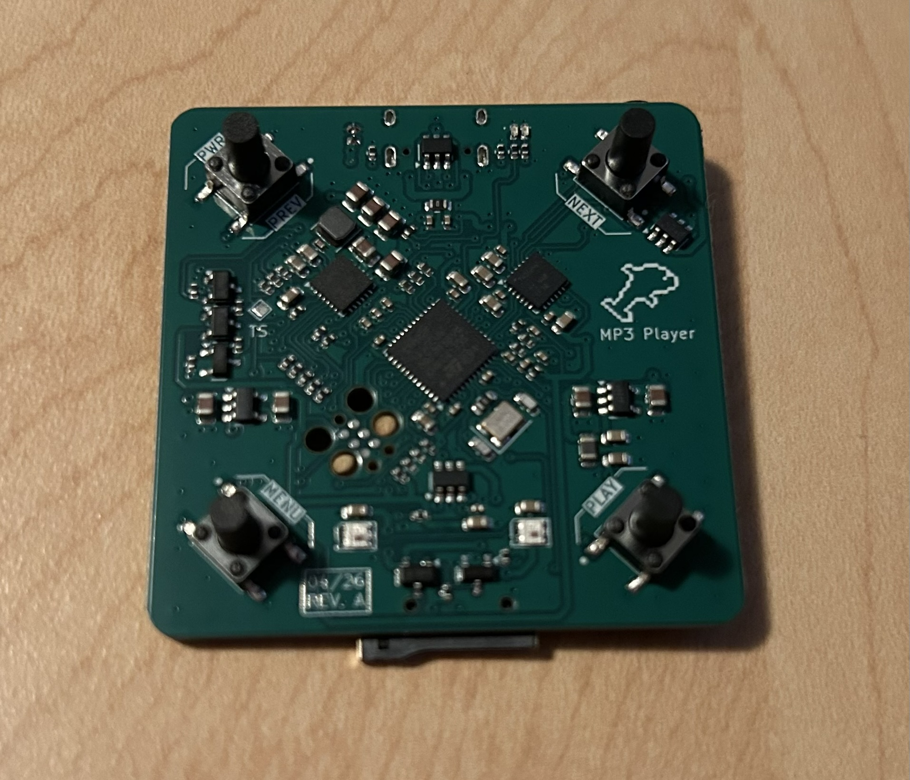
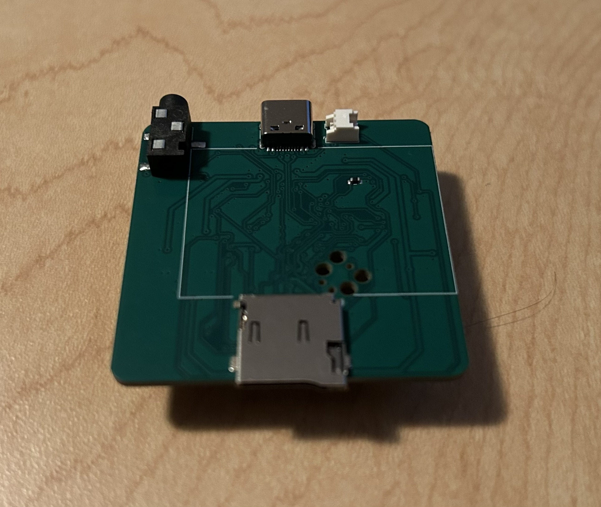

MP3 Player
A portable, rechargeable, long lasting music player desgined for wired headphones.
Overview
This board was designed for long roadtrips, long walks/runs, and any event that would require a longer battery life. Using a clip on the back of the device, this MP3 player sticks to your shirt/collar to keep your hands free while listening. The device makes use of four tactile buttons to navigate your music files and playlists, with audio feedback so that you know where you currently are in the filesystem. USB facilitates battery charging, and supports the USB mass storage device class for easy file access.


Hardware
- MCU: STM32F411CEU6
- Audio: TAD5242 DAC
- Storage: Micro SD card
- Battery: 800mAh LiPo
- RGB: WS2812 Addressable LEDs
Firmware
The audio processing pipeline is structured as follows:
SD card → FatFs → MP3 Decoder → PCM audio → I2S → DAC → Headphones
A simple low-level SPI driver is used to communicate with the card. This driver is then connected to the FatFs disk I/O interface to allow the application to use familiar, standard filesystem operations.
Compressed raw bytes from a selected MP3 file are read and passed into the Helix MP3 decoder, which in turn outputs the corresponding decoded PCM audio. Through the use of a ping-pong buffer, these audio samples are then fed to the DAC via I2S over DMA. The headphones are driven by the DAC itself, and no driver circuitry is required.